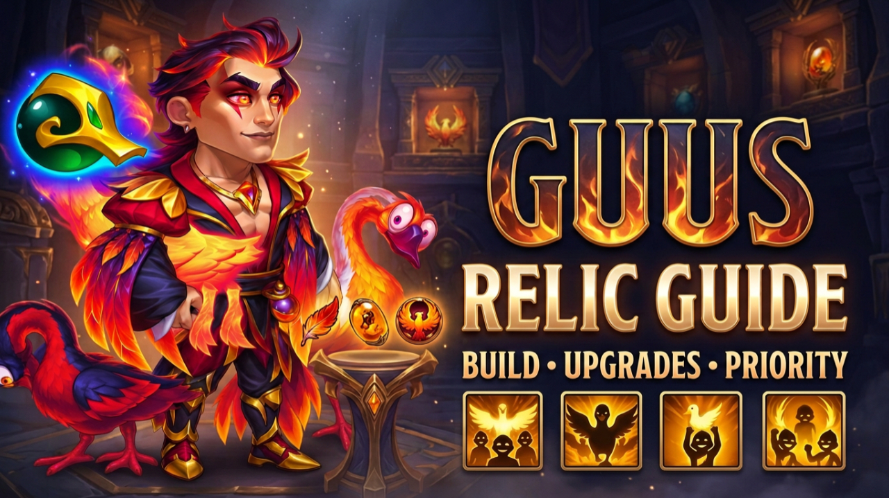

Under the Wing
Heals all allies and grants Golden Feathers, increasing their Critical Hit Chance for eight seconds. Reapplying a feather extends its duration by another eight seconds.
All four Relic unlocks, build interactions, shard requirements and our first Level 10 battle tests.

Guus already combines healing with Golden Feathers to help allies survive while strengthening their critical attacks. His Relic expands those existing connections through additional feather applications, Critical Healing and a new defensive interaction against specific critical damage types.
Guus's Relics build on mechanics already present in his original kit, so understanding Golden Feathers is essential before evaluating the new unlocks.
Heals all allies and grants Golden Feathers, increasing their Critical Hit Chance for eight seconds. Reapplying a feather extends its duration by another eight seconds.
Grants feathers to allies in front of Guus. While a feather remains active, those allies recover Health whenever they receive enemy damage.
Provides emergency healing before a feathered ally's Health would fall below 25%. The remaining feather duration increases that healing, and the feather disappears afterward.
Connects Guus's critical hits to healing and feather distribution around his target. Feathered allies also gain additional critical damage, with a further bonus for Honor heroes based on their current Health.
Guus now has seven skins supporting his survivability, Physical Attack and Critical Hit Chance.
For these first Relic tests we use Talisman of Feathers. Its Strength and Critical Hit Chance become particularly interesting once Critical Healing enters Guus's kit.
His other Talisman offers Armor and Physical Attack, giving Guus another build option that deserves direct comparison in future testing.
Every 11 seconds, Guus grants a Golden Feather to himself and the ally with the highest Health stat.
The selection is based on the highest Health stat — not whichever ally currently has the lowest Health or needs healing most.
Reapplying a feather to an ally that already has one can extend its duration, helping maintain the Critical Hit Chance and healing interactions connected to Golden Feathers.
Golden Feather every 11 secondsHealing from Guus's skills can now critically heal.
The listed Critical Healing value is 200%, meaning a critical heal restores twice the normal amount. This is the healing multiplier, not the probability of triggering a critical heal.
The chance depends on Guus's Critical Hit Chance, creating another connection between that stat and his support potential.
Critical Healing: 200%Guus's critical damage triggers healing and an additional Golden Feather for nearby allies.
Healing already existed in the original interaction. The important addition here is another feather application.
Reapplying feathers can extend their duration, helping maintain their Critical Hit Chance and other feather-related benefits for longer.
Adds another source of Golden FeathersWhile Guus or an ally has a Golden Feather, incoming Magic Critical Damage and Pure Critical Damage is reduced by 75%.
The damage type and critical condition are essential. This stated protection does not include Physical Critical Damage or ordinary non-critical damage.
At Level 30, maintaining Golden Feathers therefore gains an additional defensive purpose against suitable opponents.
75% less Magic & Pure Critical DamageFeatherhood and Legendary Honkageddon do more than simply add another buff. Golden Feathers are connected to several parts of Guus's existing kit.
Legendary Beak Peak gives Critical Hit Chance another role in Guus's build. It already contributes to the critical hits involved in Honkageddon; at Level 10, it also influences his potential to produce Critical Healing.
This makes Talisman of Feathers and Guus's Critical Hit Chance skin especially interesting for testing.
The chart used for this guide shows the following total investments, including the initial unlock.
Our Guus Relic is currently at Level 10.
That means all three battles below include Featherhood and Legendary Beak Peak.
Legendary Honkageddon at Level 20 and No Honk, No Gain at Level 30 are not active in this footage and still require future battle testing.
We selected this defense because Kendle teams have been difficult opponents in our recent testing. Our lineup maintained its Health while Yasmine and Crow applied pressure.
As the opposing heroes began to fall, all five of our heroes remained standing.
Guus: just over 4 million healingSeveral heroes contribute healing in this lineup, allowing us to begin evaluating how Guus fits into a team with combined sustain.
The opposing lineup gradually lost ground while all five of our heroes survived through the finish.
Guus: around 3.8 million healingThis was another Kendle defense and a longer battle. Our lineup remained together under pressure, giving Yasmine and Crow time to continue attacking while repeated Health recovery supported the team.
All five allies were still alive as the remaining enemies fell.
Guus: almost 9.7 million healing Guus received more than 2 million damageThese first results are encouraging. Guus contributed substantial healing, the tested lineups survived, and we recorded victories against Kendle defenses that have been difficult opponents in recent testing.
However, the displayed healing totals do not separate Critical Healing from normal healing, and these battles do not measure the improvement against an otherwise identical Guus without Relics.
They should therefore be treated as first results rather than proof of the final strength or ideal breakpoint of Guus's Relic.
Featherhood and Legendary Beak Peak are active in our current build. The combination provides regular additional Golden Feathers and introduces the possibility of Critical Healing.
Current tested breakpointLegendary Honkageddon and No Honk, No Gain introduce additional feather applications and specialized defensive protection, but our current Level 10 footage does not test these upgrades.
No final recommendation yetGuus's Relic has made a positive first impression at Level 10. Featherhood adds a regular source of Golden Feathers, while Legendary Beak Peak introduces Critical Healing into a kit already built around sustain and Critical Hit interactions.
The victories against Kendle defenses are encouraging, and Guus fighting alongside Kendle gives us another combination worth investigating.
The next step is comparison: more teams, more opponents, different Relic levels and eventually direct testing of Legendary Honkageddon and No Honk, No Gain.
Watch the complete Gods of Alliance breakdown for all four Guus Relic unlocks and the full footage from our first Level 10 battle tests.